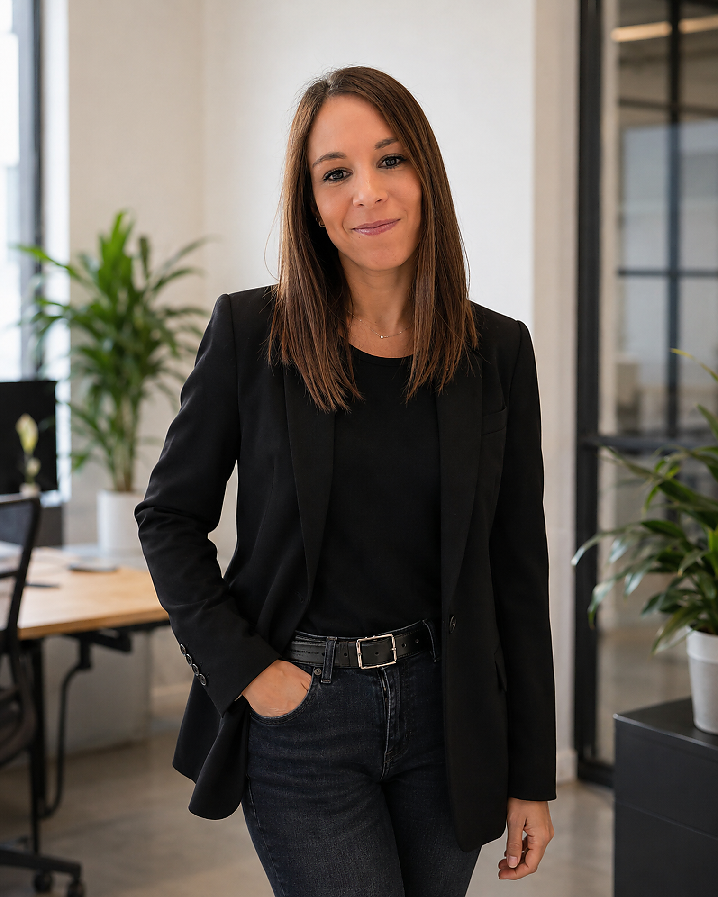
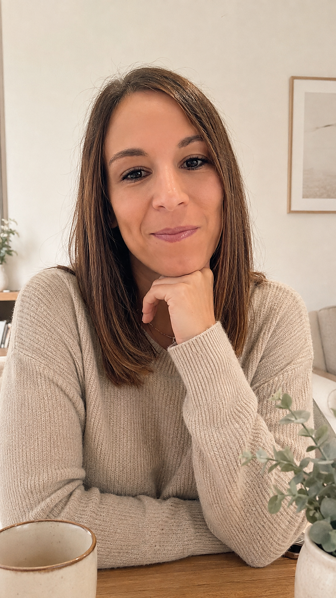

Adolescentes y jóvenes
Dificultades emocionales, ansiedad, regulación emocional, autoestima, relaciones, bloqueo, aislamiento o momentos de cambio.
Acompaño online a adolescentes, jóvenes y familias a entender qué está pasando, recuperar la comunicación y encontrar herramientas concretas para generar cambios reales y sostenibles.
No trabajo con recetas generales. El proceso online se adapta a la situación de cada adolescente, joven y familia.
Dificultades emocionales, ansiedad, regulación emocional, autoestima, relaciones, bloqueo, aislamiento o momentos de cambio.
Discusiones frecuentes, desafío, límites, escaladas de conflicto, impulsividad o sensación de que la convivencia se está yendo de las manos.
Orientación para recuperar seguridad, mejorar la comunicación y aprender a intervenir sin entrar continuamente en luchas de poder.

Llevo más de diez años trabajando con adolescentes, jóvenes y familias en contextos de alta complejidad. En consulta online, combino una mirada psicológica rigurosa con herramientas muy concretas para el día a día.
Busco que entiendas qué está sosteniendo el problema, qué podéis cambiar y cómo hacerlo de una forma asumible para vuestra familia.
Una conversación online breve para conocernos, entender qué os preocupa y valorar si puedo ayudaros.
Recogemos la información relevante y definimos objetivos de trabajo adaptados a vuestra situación.
Trabajamos con el adolescente, con la familia o con ambos, revisando avances y ajustando herramientas cuando sea necesario.
Trabajo online con adolescentes, jóvenes y familias de toda España.
Este formato facilita iniciar y mantener el proceso con mayor flexibilidad, sin desplazamientos y desde un entorno conocido.
Solo necesitas un espacio tranquilo, conexión estable y un dispositivo con cámara.
Quiero más infoEl formato online permite desarrollar un proceso terapéutico profundo y continuado cuando se adapta bien a la persona y a sus necesidades. En adolescentes y jóvenes, además, trabajar desde un entorno conocido puede favorecer que se sientan más cómodos y que la terapia se integre con mayor facilidad en su rutina.
No se trata de trasladar una sesión presencial a una pantalla sin más. Adapto las sesiones para mantener un trabajo dinámico y participativo: utilizamos materiales visuales, ejercicios, registros, recursos compartidos y tareas entre sesiones cuando pueden ayudar. El objetivo es que lo trabajado no se quede en la videollamada, sino que se traduzca en cambios concretos en el día a día.
Incorporo también el trabajo con madres y padres. En la adolescencia, la familia forma parte del contexto en el que se producen y mantienen muchas de las dificultades, por lo que su participación puede ser fundamental para favorecer cambios estables y generalizar y sostener los avances fuera de sesión.

Sí. De hecho, en adolescencia muchas veces es muy útil comenzar trabajando con los adultos aunque el adolescente todavía no quiera participar. Cambiar la forma de comunicaros, revisar cómo se están poniendo los límites, reducir las escaladas de conflicto o entender mejor qué está manteniendo determinadas conductas puede producir cambios importantes en casa.
Este primer trabajo con la familia también puede ayudar a crear un contexto más favorable para que el adolescente se sienta menos señalado y más dispuesto a implicarse. Además, cuando percibe que la terapia no consiste únicamente en «cambiarle a él», sino en ayudar a toda la familia a relacionarse de otra manera, suele ser más fácil plantear su incorporación al proceso si posteriormente resulta conveniente.
Sí, puede ser un formato muy adecuado para adolescentes y jóvenes. La eficacia del proceso no depende únicamente de estar físicamente en la misma habitación, sino de factores como la alianza terapéutica, la implicación, la continuidad y que la intervención esté bien adaptada a la persona. En consulta online utilizo recursos visuales, ejercicios, materiales compartidos y herramientas prácticas para favorecer una participación activa.
Para que el trabajo sea cómodo y realmente útil, también es importante cuidar algunas condiciones básicas del entorno. Valoro que exista suficiente privacidad y unas condiciones mínimas para poder trabajar con tranquilidad. En la primera toma de contacto revisamos vuestro caso y vemos si este formato encaja bien.
Mi especialización principal es la adolescencia y la juventud, pero el trabajo con madres, padres y familias ocupa una parte muy importante de mi práctica profesional. Muchas dificultades adolescentes no pueden entenderse de forma aislada del contexto familiar: la comunicación, los límites, las respuestas ante el conflicto o la manera en que cada miembro reacciona pueden influir mucho en la evolución.
Por eso, según los objetivos del proceso, puedo trabajar con el adolescente, contigo como madre o padre, o combinar ambos espacios, ya que la implicación familiar es, en muchos casos, un elemento decisivo para que los cambios se mantengan.
No es necesario esperar a que el problema sea extremo. Suele ser buen momento para pedir una valoración cuando los conflictos se repiten y cada vez cuesta más resolverlos, cuando la comunicación se ha deteriorado, aparecen cambios emocionales o conductuales que preocupan, o cuando como madre o padre sientes que has probado muchas cosas y ya no sabes cómo actuar.
Pedir ayuda no implica necesariamente iniciar un proceso largo: a veces una primera valoración ya permite poner orden y orientar mejor los siguientes pasos. La primera valoración sirve precisamente para entender qué está ocurriendo, qué factores pueden estar influyendo y decidir si es necesario iniciar un proceso terapéutico o si bastan unas pautas más concretas.
Escríbeme por WhatsApp y cuéntame brevemente qué os preocupa. Te responderé para valorar juntos cuál puede ser el siguiente paso.